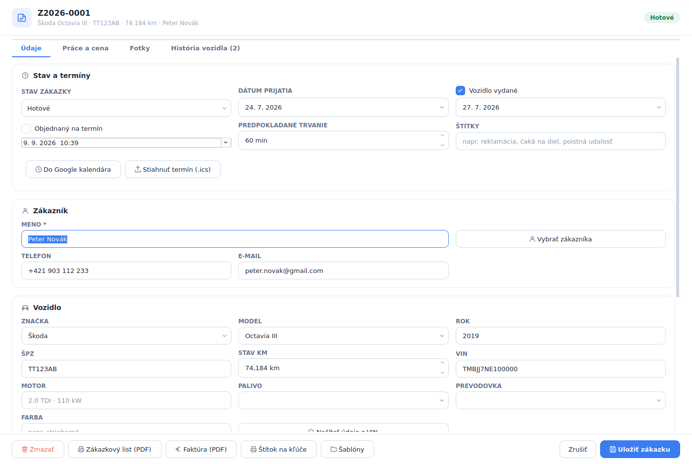
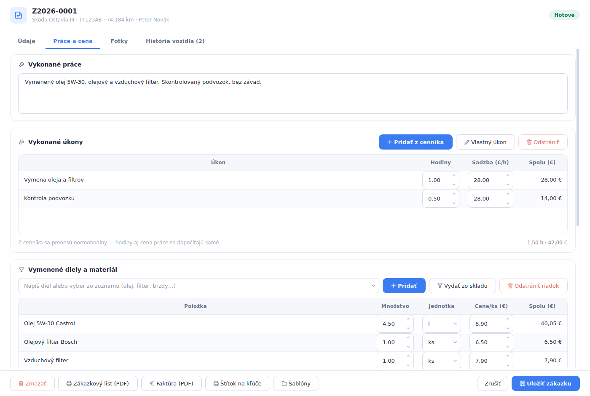
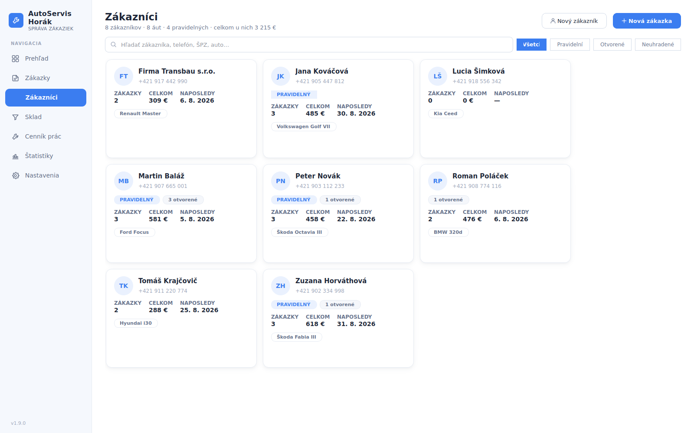
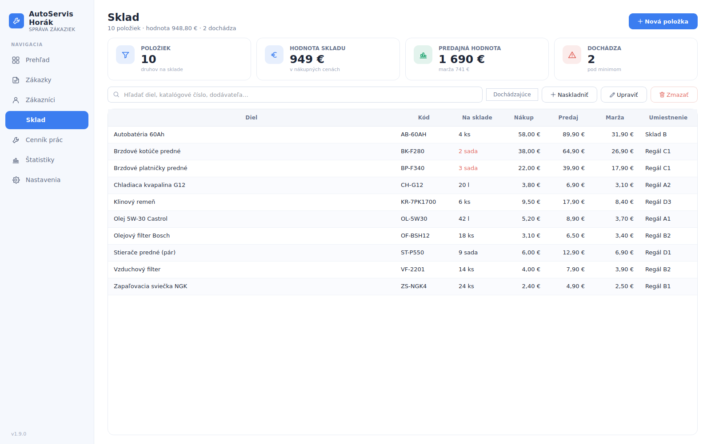
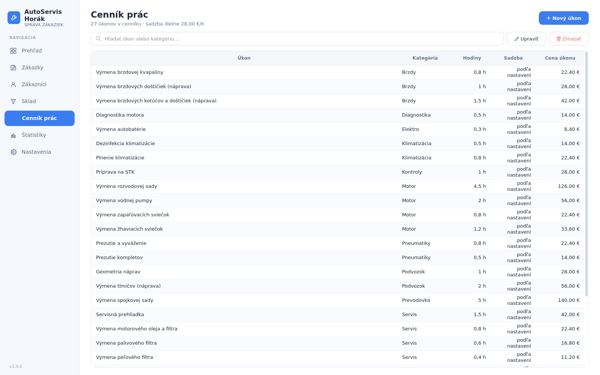
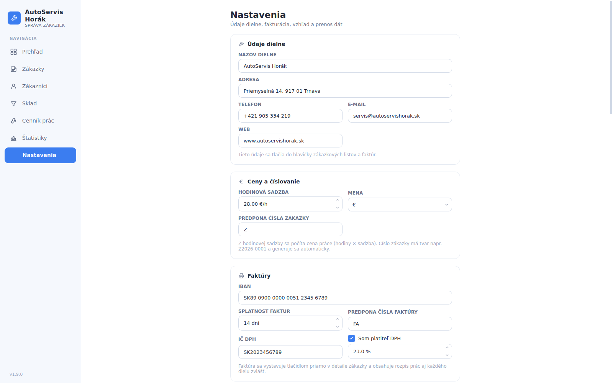

Funkcie
Čo Mechanik vie
Obrazovky nižšie sú z bežiaceho programu. Ukážkové dáta patria vymyslenej dielni AutoServis Horák.
Zákazky
Zoznam zákaziek s filtrami a vyhľadávaním
Základná obrazovka pri pulte. Vidíte všetky zákazky s číslom, zákazníkom, vozidlom, popisom práce, cenou, stavom a dátumom prijatia.
- Filtre: otvorené, prijaté, v riešení, čaká na diely, hotové, vydané
- Vyhľadávanie podľa mena, značky, ŠPZ alebo čísla zákazky
- Stĺpec s fotkou, aby ste auto spoznali aj bez otvárania zákazky
- Export do CSV pre účtovníčku alebo Excel

Detail zákazky
Všetko o jednej oprave na štyroch záložkách
Zákazka má záložky Údaje, Práce a cena, Fotky a História vozidla. V hlavičke je číslo, auto, stav km a zákazník.
- Vozidlo: značka, model, rok, ŠPZ, stav km, VIN, motor, palivo, prevodovka, farba
- Načítanie údajov z VIN, aby ste ich neprepisovali ručne
- Objednanie na termín, pridanie do Google kalendára alebo stiahnutie .ics
- Štítky ako reklamácia, čaká na diel či poistná udalosť
- Tlač: zákazkový list (PDF), faktúra (PDF), štítok na kľúče, šablóny

Práce a cena
Úkony z cenníka, diely zo skladu, cena sa dopočíta
Na záložke Práce a cena zapíšete, čo sa robilo. Úkon pridáte z cenníka aj s normohodinami, cena práce vyjde z hodinovej sadzby dielne.
- Vykonané úkony s hodinami a sadzbou, spolu za prácu
- Vymenené diely a materiál s množstvom, jednotkou a cenou za kus
- Výdaj dielu priamo zo skladu, takže stav sedí
- Textový popis vykonanej práce, ktorý ide na zákazkový list

Zákazníci
Kartotéka s autami a útratou
Každý zákazník má kartu s telefónom, autami, počtom zákaziek, celkovou útratou a dátumom poslednej návštevy.
- Označenie pravidelných zákazníkov
- Upozornenie na otvorené a neuhradené zákazky
- Filtre: všetci, pravidelní, otvorené, neuhradené
- Vyhľadávanie podľa mena, telefónu, ŠPZ alebo auta

Sklad
Diely s cenami, maržou a miestom v regáli
Sklad ukáže, čo máte na regáli, za koľko ste to kúpili a za koľko predávate. Program rovno počíta hodnotu skladu aj maržu.
- Katalógové číslo, množstvo, jednotka a umiestnenie (napríklad Regál C1)
- Nákupná cena, predajná cena a marža na kus
- Hodnota skladu v nákupných cenách aj predajná hodnota
- Upozornenie na položky pod minimom cez filter Dochádzajúce

Cenník prác
Normohodiny raz zadáte a už len vyberáte
Cenník obsahuje úkony rozdelené do kategórií ako brzdy, motor, podvozok, klimatizácia, pneumatiky či diagnostika. Pri každom je počet hodín.
- Cena úkonu sa počíta ako hodiny krát sadzba dielne
- Zmena hodinovej sadzby prepočíta celý cenník
- Vlastné úkony si doplníte kedykoľvek
- Úkon sa do zákazky pridá aj s hodinami

Štatistiky
Výkon dielne bez ručného počítania
Štatistiky za zvolený rok ukážu, koľko zákaziek prešlo dielňou, aké boli tržby a kde sa peniaze tvoria.
- Tržby z práce oproti tržbám z dielov v eurách aj percentách
- Počet zákaziek a tržby po mesiacoch
- Rozdelenie zákaziek podľa stavu a suma neuhradených
- Najčastejšie značky vozidiel, najhodnotnejší zákazníci, najpoužívanejšie diely

Nastavenia
Údaje dielne, sadzba a fakturačné náležitosti
Čo zadáte v nastaveniach, to sa tlačí do hlavičky zákazkových listov a faktúr. Nastavenie je jednorazové.
- Názov dielne, adresa, telefón, e-mail a web
- Hodinová sadzba, mena a predpona čísla zákazky
- IBAN, splatnosť faktúr, predpona čísla faktúry
- IČ DPH a sadzba DPH pre platiteľov

Pozrite si to naživo
Program si nainštalujete za pár minút a vyskúšate na vlastných zákazkách.